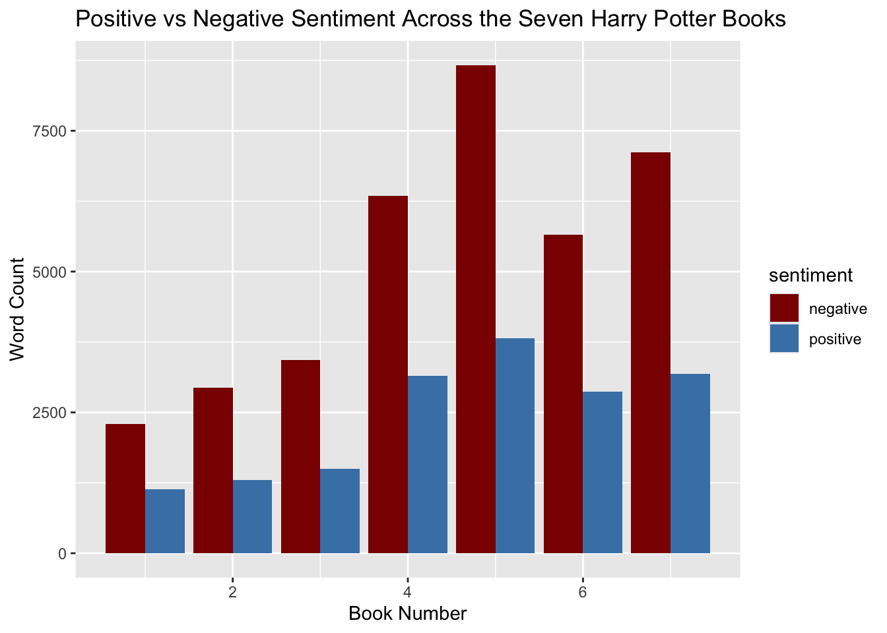
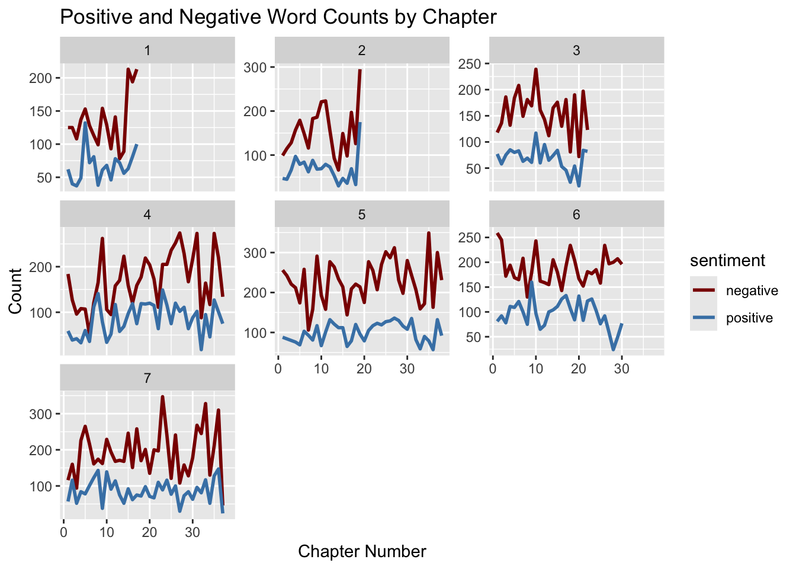
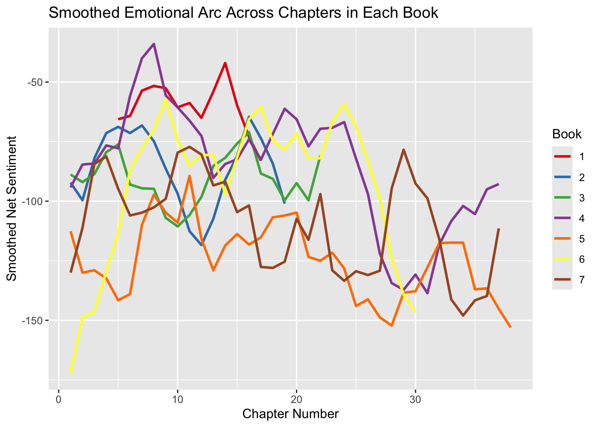
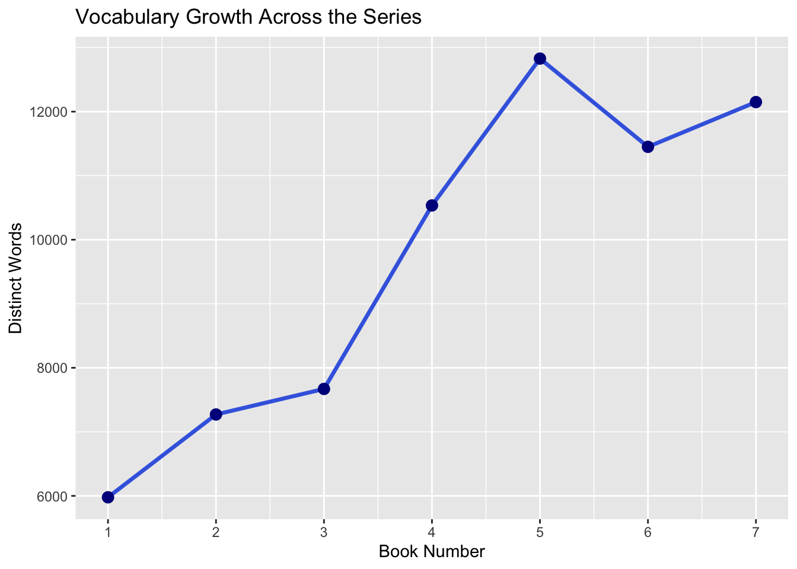
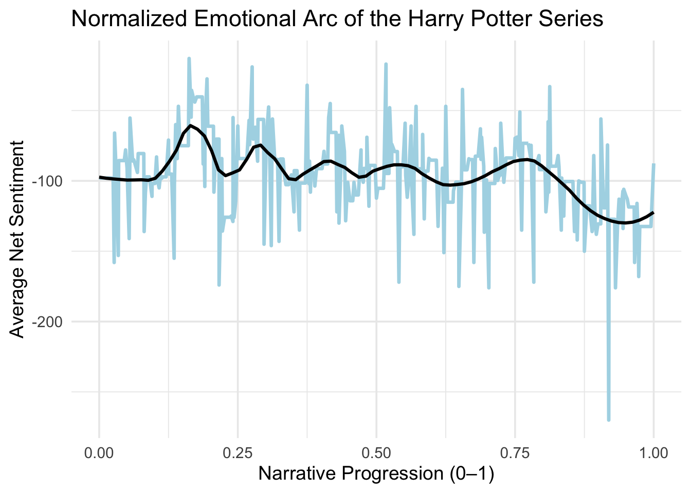

This project uses several derived datasets created from the original Harry Potter text corpus (from the harrypotter R package). The following tables describe each dataset and variable used in the analysis.
1.Raw Token Dataset: hp_words
This dataset contains one token (word) per row after tidying the book texts.
Variable
Type
Description
book
factor
The book name (from philosophers_stone to deathly_hallows).
chapter
integer
chapter number within each book.
word
character
A single word token extracted from the chapter text.
2.Sentiment-Merged Dataset: hp_sentiment
This dataset joins HP tokens with sentiment lexicons (bing, nrc, afinn).
Variable
Type
Description
book
factor
The book name (from philosophers_stone to deathly_hallows).
chapter
integer
chapter number within each book.
word
character
A single word token extracted from the chapter text.
sentiment
character
Sentiment category assigned by dictionary (“positive”, “negative”, or emotion categories).
score
numeric
Sentiment score (AFINN only; bing & nrc are binary).
This dataset smooths and interpolates sentiment over 200 equally spaced time points.
Variable
Type
Description
time
numeric
Normalized narrative progression (0–1).
net
numeric
Estimated sentiment via linear interpolation.
2.Introduction
Emotion plays a central role in narrative structure, pacing, and reader interpretation. The Harry Potter series provides a rich longitudinal text corpus spanning seven books. This project investigates:
Research Question: 1. How does sentiment (positive vs. negative vocabulary) vary across the seven books? 2. Which characters or concepts dominate each book’s vocabulary? 3. How does emotional tone fluctuate within each book across chapters? 4. How do positive and negative words evolve over chapters within each book?
To answer these, I apply lexicon-based sentiment analysis using tidytext and visualize emotional trends at chapter and book scales, along with lexical frequency trends.
2.1 Setup Before loading the data, I install the harrypotter package (which contains the book texts) and load the libraries used throughout the analysis. This project relies heavily on the tidyverse for data wrangling, tidytext for sentiment analysis, and ggplot2 for visualization.
if (!require(devtools)) install.packages("devtools")
Loading required package: devtools
Loading required package: usethis
if (!require(harrypotter)) devtools::install_github("bradleyboehmke/harrypotter")
── Conflicts ────────────────────────────────────────── tidyverse_conflicts() ──
✖ dplyr::filter() masks stats::filter()
✖ dplyr::lag() masks stats::lag()
ℹ Use the conflicted package (<http://conflicted.r-lib.org/>) to force all conflicts to become errors
Attaching package: 'janitor'
The following objects are masked from 'package:stats':
chisq.test, fisher.test
library(forcats)library(wordcloud)
Loading required package: RColorBrewer
library(ggplot2)library(RColorBrewer)library(zoo)
Attaching package: 'zoo'
The following objects are masked from 'package:base':
as.Date, as.Date.numeric
library(here)
here() starts at /Users/jinhuarong/ling343/project2
##3.Data & Preprocessing The harrypotter package stores each book as a character vector, with one element per chapter. Here, I assemble all books into a single tibble for easier processing. ##3.1 Combine Books into a Single Dataset
##3.3 Tokenize Text and Join Sentiment Lexicon I convert the text into one-word-per-row format and join the bing sentiment labels.
hp_words <- hp_books |>unnest_tokens(word, text)data(stop_words)bing <-get_sentiments("bing")hp_sentiment <- hp_words |>anti_join(stop_words, by ="word") |>left_join(bing, by ="word")
Warning in left_join(anti_join(hp_words, stop_words, by = "word"), bing, : Detected an unexpected many-to-many relationship between `x` and `y`.
ℹ Row 15411 of `x` matches multiple rows in `y`.
ℹ Row 5754 of `y` matches multiple rows in `x`.
ℹ If a many-to-many relationship is expected, set `relationship =
"many-to-many"` to silence this warning.
##4. Lexical Patterns Before analyzing sentiment, it is useful to look at frequent lexical items across books. This can help me identify character prominence, recurring themes, and vocabulary shifts over time.
##4.1 Top Words in Each Book
top_words <- hp_words |>anti_join(stop_words, by ="word") |># remove stopwordscount(book, word, sort =TRUE)|>group_by(book) |>slice_max(n, n =10) |># top 10 words per bookungroup()
##4.2 Visualizing Top Words
ggplot(top_words, aes(x = n, y =reorder_within(word, n, book),fill =factor(book))) +geom_col(show.legend =FALSE) +scale_y_reordered() +facet_wrap(~ book, scales ="free_y") +labs(title ="Most Frequent Words Throughout the Harry Potter Series",x ="Word Count",y ="" ) +theme_minimal(base_size =14) +theme(strip.text =element_text(face ="bold", size =12),plot.title =element_text(size =20, face ="bold") )
Unsurprisingly, Harry is the most frequent word in every book, with Ron and Hermione consistently close behind. Each panel also highlights book-specific focal characters—Lockhart in Book 2, Lupin in Book 3, Moody and Crouch in Book 4, Umbridge in Book 5, Slughorn in Book 6, and Voldemort in Book 7—mirroring the shifting narrative focus across the series.
##5. Sentiment Across Books I first examine sentiment proportions (positive vs. negative) aggregated by book.
ggplot(sentiment_by_book, aes(x = book, y = n, fill = sentiment)) +geom_col(position ="dodge") +labs(title ="Positive vs Negative Sentiment Across the Seven Harry Potter Books",x ="Book Number", y ="Word Count") +scale_fill_manual(values =c("positive"="steelblue","negative"="darkred"))

Negative words consistently outnumber positive ones across all seven books, and the spike in Books 4–7 aligns with the series’ shift toward darker themes and rising danger. Positive sentiment increases as well, but at a much slower rate, suggesting that optimism never grows at the same pace as conflict.
##6. Chapter-Level Emotional Arc To see local emotional fluctuations, I compute per-chapter sentiment and then smooth the trend.
Warning in left_join(anti_join(hp_words, stop_words, by = "word"), get_sentiments("bing"), : Detected an unexpected many-to-many relationship between `x` and `y`.
ℹ Row 15411 of `x` matches multiple rows in `y`.
ℹ Row 5754 of `y` matches multiple rows in `x`.
ℹ If a many-to-many relationship is expected, set `relationship =
"many-to-many"` to silence this warning.
ggplot(chapter_sentiment, aes(x = chapter, y = net, color =factor(book))) +geom_line(size =1) +facet_wrap(~ book, scales ="free_x") +labs(title ="Emotional Arc by Book",x ="Chapter Number",y ="Net Sentiment" ) +scale_color_brewer(palette ="Set1") +theme(legend.position ="none")
Warning: Using `size` aesthetic for lines was deprecated in ggplot2 3.4.0.
ℹ Please use `linewidth` instead.
The chapter-level emotional arcs show that all seven books maintain a generally negative tone, with sharp drops aligning with major moments of conflict in the story. The later novels—especially Books 4, 5, and 7—show the most dramatic fluctuations, reflecting pivotal plot events such as Voldemort’s return, the rise of the Ministry’s oppression, and the final battle against the Death Eaters. These increasingly volatile emotional swings mirror the darker, higher-stakes trajectory of the Harry Potter narrative as the series progresses.
##7. Positive vs. Negative Words Over Time This plot separates positive and negative word counts.
posneg <- hp_sentiment |>filter(!is.na(sentiment)) |>count(book, chapter, sentiment)ggplot(posneg,aes(x = chapter, y = n, color = sentiment)) +geom_line(size =1) +facet_wrap(~ book, scales ="free_y") +labs(title ="Positive and Negative Word Counts by Chapter",x ="Chapter Number",y ="Count" ) +scale_color_manual(values =c("positive"="steelblue", "negative"="darkred"))

Across all seven books, negative words consistently outnumber positive ones, with sharp spikes in negativity aligning with major plot tensions—such as the Basilisk attacks in Book 2, the Triwizard crises in Book 4, Umbridge’s regime in Book 5, and the escalating war in Books 6 and 7.
ggplot(chapter_sentiment,aes(x = chapter, y = smooth, color =factor(book))) +geom_line(size =1) +labs(title ="Smoothed Emotional Arc Across Chapters in Each Book",x ="Chapter Number",y ="Smoothed Net Sentiment",color ="Book" ) +scale_color_brewer(palette ="Set1")
Warning: Removed 4 rows containing missing values or values outside the scale range
(`geom_line()`).

Book 1 rises steadily as Harry enters the magical world, while Book 2 dips early during the attacks at Hogwarts. Book 3 stays comparatively stable until the sharp swing at the Sirius/Scabbers reveal, whereas Book 4 fluctuates heavily throughout the Triwizard Tournament(Harry faced the death of a companion for the first time, and Cedric’s death marked a turning point in the Harry Potter series.). Book 5 shows the most chaotic pattern, matching the constant conflict with Umbridge, while Book 6 peaks mid-story before dropping sharply after Dumbledore’s death. Book 7 oscillates throughout the Horcrux hunt and reaches some of the lowest points in the entire series, reflecting the sustained tension leading into the final battle.
##8. Wordclouds Wordclouds give a high-level sense of vocabulary prominence. ##8.1 Overall Word Frequencies
The word cloud highlights how central the trio—Harry, Ron, and Hermione—is to the narrative, with other major figures like Dumbledore, Hagrid, Voldemort, and Snape also standing out. Frequent appearance of words such as looked, eyes, hand, and voice suggests Rowling’s reliance on sensory and bodily descriptions to move scenes forward. ##8.2 Positive vs Negative Wordclouds
Warning in wordcloud(neg_words$word, neg_words$n, max.words = 100, colors =
"steelblue"): death could not be fit on page. It will not be plotted.
Warning in wordcloud(neg_words$word, neg_words$n, max.words = 100, colors =
"steelblue"): desperately could not be fit on page. It will not be plotted.
title("Negative Words")
Positive words center around magic, happiness, and protection—echoing the series’ recurring moments of wonder, camaraderie, and triumph. Negative words, however, cluster around fear, injury, and death, mirroring the threats, battles, and emotional strain that define Harry’s encounters with dark forces.
##9. Vocabulary Growth This analysis looks at how many unique words appear in each book.
vocab_growth <- hp_words |>group_by(book) |>summarise(vocab_size =n_distinct(word)) |>ungroup()ggplot(vocab_growth, aes(x = book, y = vocab_size)) +geom_line(size =1.2, color ="royalblue") +geom_point(size =3, color ="darkblue") +scale_x_continuous(breaks =1:7) +labs(title ="Vocabulary Growth Across the Series",x ="Book Number",y ="Distinct Words" )

The vocabulary grows steadily across the series, with the biggest jump occurring from Book 3 to Book 4, reflecting the shift from children’s adventure to a darker, more complex narrative world. Books 5–7 maintain this richer linguistic density as the plot expands, conflicts intensify, and the storytelling becomes more mature.
##10. Normalized Emotional Arc Across the Full Series Because each book contains a different number of chapters, I normalize sentiment by mapping chapter indices to a 0–1 scale. This allows comparison across the entire series as a single emotional trajectory.
ggplot(chapter_mean, aes(x = time, y = mean_sent)) +geom_line(color ="lightblue", linewidth =1.2) +geom_smooth(span =0.2, se =FALSE, color ="black", linewidth =1.1) +labs(title ="Normalized Emotional Arc of the Harry Potter Series",x ="Narrative Progression (0–1)",y ="Average Net Sentiment" ) +theme_minimal(base_size =14)
`geom_smooth()` using method = 'loess' and formula = 'y ~ x'

The normalized emotional arc shows that the series maintains a generally negative emotional tone overall, but with noticeable mid-story rises corresponding to moments of hope, discovery, and bonding that occur across multiple books. As the narrative progresses toward the ending, the curve dips again, reflecting the darker, high-stakes conflicts of the final volumes before slightly recovering at the conclusion.
##11. Conclusion Across all analyses, the Harry Potter series reveals a consistent emotional and linguistic trajectory that mirrors the narrative’s increasing thematic complexity. Sentiment patterns show that negative language becomes more dominant as the stakes rise, especially in the later books, while the normalized emotional arc highlights recurring waves of tension and release that structure the storyline. Lexical patterns reinforce this progression: character-centered words like Harry, Ron, and Hermione remain constant anchors, but new focal points such as Umbridge, Voldemort, and wand emerge as plot elements intensify. Vocabulary size also grows substantially over the series, reflecting both Rowling’s expanding world-building and the darker, more mature tone of the later books.
Harry Potter readers are typically drawn to the series’ unique worldview, immersing themselves in a realm of magic, danger, and fantasy. Each book centers on the ongoing clash between protagonist and antagonist, and although Harry ultimately triumphs in nearly every encounter, the linguistic patterns show that the author relies far more on negative vocabulary than positive. This was a counterintuitive finding: before conducting this research, I assumed the narrative would contain more positive sentiment, particularly given Rowling’s explicit thematic emphasis on love.